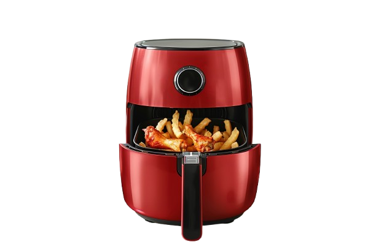
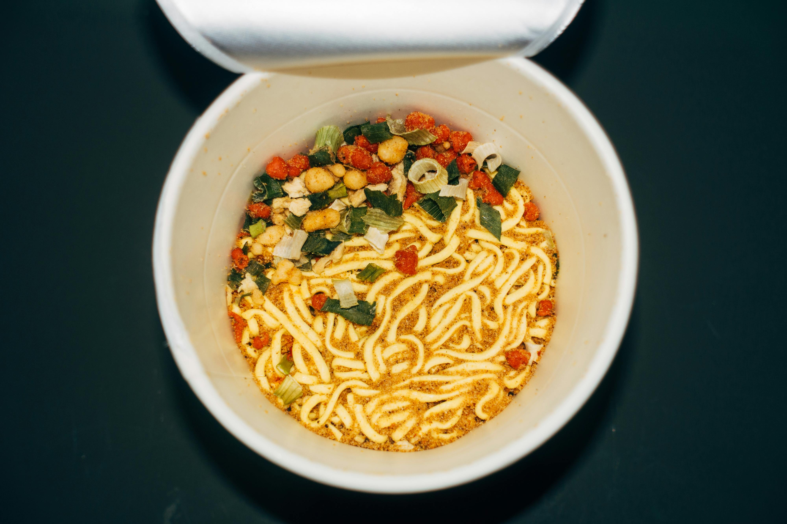
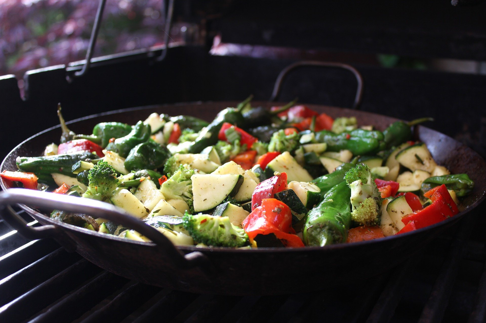
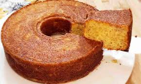
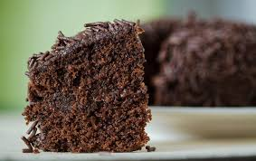
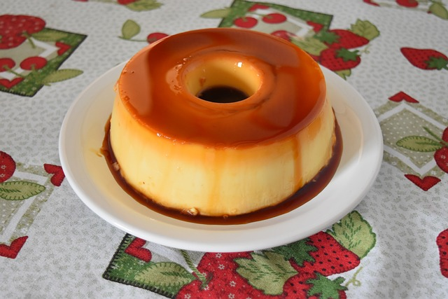
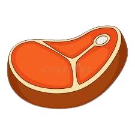
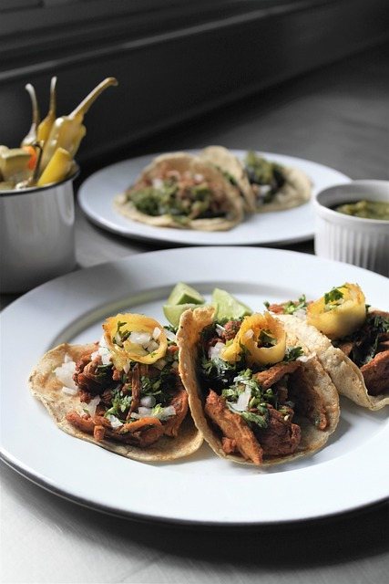
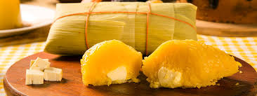
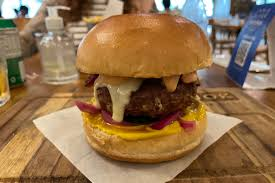

Receitas mais buscadas

airfryer

receitas para almoço rapido
Receitas de sobremesas fáceis

Receitas fit e saudáveis

Receitas para almoço de domingo
Receitas Salgadas
Pastel
Coxinha
Enroladinho de Salsicha

Empada
Quibe
Receitas Doces
Cupcake
Bolo de Fubá

Bolo de Banana

Bolo de Chocolate

Pudim
Receitas Restritivas

Receitas sem lactose
Receitas sem glúten

Receitas vegetarianas
Receitas veganas

Ingredientes
Para a Massa:
- 500g de farinha de trigo
- 10g de sal
- 50g de açúcar
- 10g de fermento biológico seco
- 300ml de água fria (ou leite)
- 40g de manteiga derretida
Para a Manteiga:
- 250g de manteiga sem sal (mole, mas ainda firme)
Passo a Passo
1. Preparar a Massa:
- Em uma tigela grande, misture a farinha, o sal e o açúcar.
- Em outra tigela, dissolva o fermento na água ou leite. Deixe descansar por alguns minutos.
- Adicione a mistura de fermento à farinha e misture até formar uma massa.
- Adicione a manteiga derretida e sove a massa por cerca de 10 minutos, até que fique lisa e elástica.
- Deixe a massa descansar por cerca de 1 hora, coberta com um pano, até que dobre de tamanho.
2. Preparar a Manteiga:
- Coloque a manteiga entre duas folhas de papel manteiga e use um rolo para achatar até formar um retângulo de cerca de 1 cm de espessura.
- Coloque a manteiga na geladeira para que fique firme novamente.
3. Incorporar a Manteiga:
- Após a massa descansar, coloque-a em uma superfície enfarinhada e forme um retângulo.
- Coloque o retângulo de manteiga no centro da massa.
- Dobre as bordas da massa sobre a manteiga, envolvendo-a completamente.
4. Dobrando a Massa (Laminação):
- Com um rolo, abra a massa em um retângulo longo (cerca de 60 cm x 20 cm).
- Dobre a massa em três partes, como uma carta. Isso é chamado de "dobramento simples".
- Deixe a massa descansar na geladeira por 30 minutos.
- Repita o processo de abrir e dobrar a massa mais duas vezes (totalizando três dobramentos).
5. Modelar os Croissants:
- Apos os dobramentos, abra a massa em um retângulo grande e fino.
- Corte a massa em triângulos (cerca de 10 cm de base).
- Começando pela base do triângulo, enrole a massa até a ponta, formando o croissant.
- Coloque os croissants em uma assadeira forrada com papel manteiga.
6. Fermentar:
- Deixe os croissants descansarem em um local morno por cerca de 1-2 horas, ou até que tenham dobrado de tamanho.
7. Assar:
- Pré-aqueça o forno a 200°C.
- Se desejar, pincele os croissants com uma mistura de gema de ovo e água para um acabamento brilhante.
- Asse por cerca de 15-20 minutos, ou até que estejam dourados e crocantes.

Ingredientes
Para a Carnita:
- 1 kg de carne de porco (ombro ou paleta)
- 2 colheres de sopa de óleo
- 1 cebola grande, cortada em quartos
- 4 dentes de alho, picados
- 1 colher de chá de cominho em pó
- 1 colher de chá de orégano seco
- Sal e pimenta a gosto
- 1 laranja (suco e casca)
- 1 folha de louro
Para Montar os Tacos:
- Tortilhas de milho ou trigo
- Cebola picada
- Coentro fresco picado
- Limão (cortado em gomos)
Modo de Preparo
- Preparar a Carne: Aqueça o óleo em uma panela grande em fogo médio-alto. Adicione a carne de porco e doure todos os lados. Adicione a cebola, o alho, o cominho, o orégano, sal, pimenta, o suco da laranja, a casca da laranja e a folha de louro. Cubra a carne com água (aproximadamente 500 ml) e deixe cozinhar em fogo baixo por cerca de 2 a 3 horas, até que a carne esteja macia e se desfaça facilmente.
- Desfiar a Carne: Retire a carne da panela e desfie com um garfo. Reserve.
- Tostar a Carne (opcional): Em uma frigideira grande, adicione a carne desfiada e frite por alguns minutos para deixar as bordas crocantes.
- Montar os Tacos: Aqueça as tortilhas em uma frigideira ou no micro-ondas. Coloque uma porção de carne desfiada em cada tortilha. Adicione cebola picada e coentro fresco a gosto. Sirva com gomos de limão ao lado.

